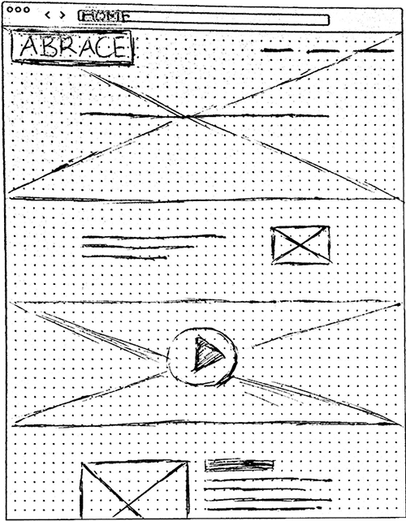
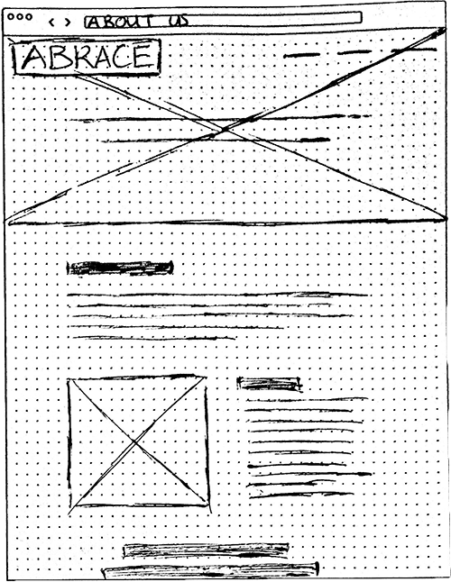
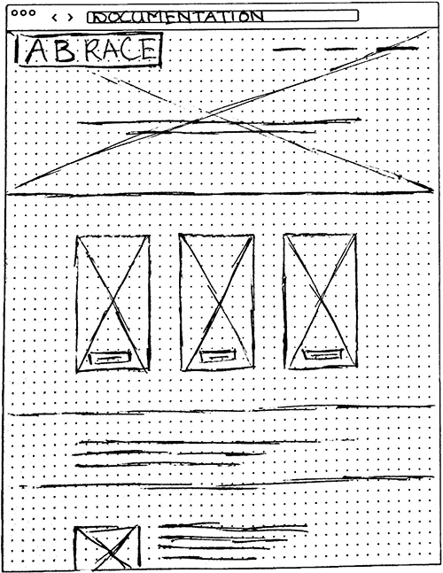

Designing a website tailored to private consumers
ABRACE is a start-up company from Aalborg that strives to help people suffering from physical and mental symptoms. Their main product is a sensory stimulating armchair that provides the user stimuli stimulation while calming the body and mind.
CHALLENGE
The product is based on a collaboration with Nyt Aalborg Universitetshospital (NAU) with the purpose to develop furniture for psychiatry institutions. However, ABRACE wishes to start selling their product to individuals which requires a different approach from their current one.
SOLUTION
A website with content tailored to private consumers: this will be obtained by concentrating on how to present information in both a visually pleasing way and in a language that is familiar and relevant to the user.
CONTENT PRODUCTION BASED ON DATA-DRIVEN USER UNDERSTANDING
Through quantitative research it has been discovered that users have a great interest in knowing about how the ABRACE armchair works and why it works. The website has therefore information on product features and its functions, along with how the founders of ABRACE are experts in their field and that their products are initiated in collaboration with psychiatry professionals.
The general idea is to visually represent the ABRACE armchair as an ordinary furniture that blends in with the rest of the room, which is in line with the client’s focus on anti-stigmatisation. My team and I made a mood board prior to prototyping to reflect this idea.
After finalizing the content requirements I made a sketch to visualize the wireframe. This acted as a guide for a high-fidelity prototype that I realized in Adobe XD. This was where I worked intensively with this programme for the first time and where I learned that I enjoy prototyping.
The prototype went through two iterations with each three stages: prototyping, reviewing and refining. The first user test was focused on design and content and the second was focused on usability.


